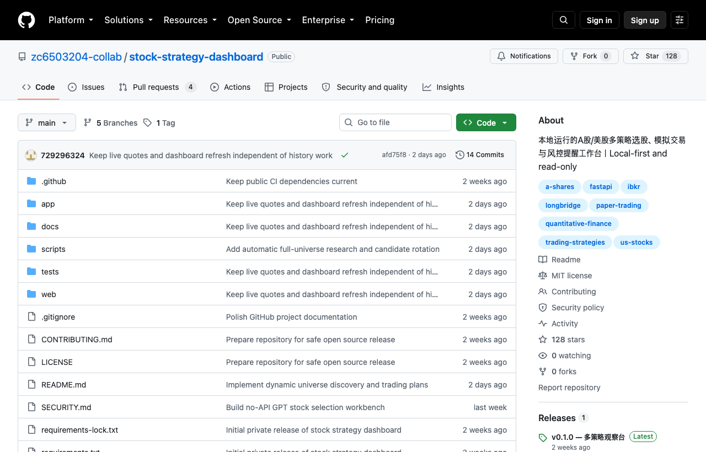

06 GitHub
zc6503204-collab/stock-strategy-dashboard
로컬에서 돌리는 주식 전략 점검판
★ 128이번 주 +47PythonMIT 사내 사용 가능릴리스 v0.1.0 (09.09)최근 활동 09.21테스트 있음예제 없음AGENTS.md 없음

이 저장소는 개인 PC에서 주식 전략을 연구하고 계획을 기록하는 도구다. A주와 미국 주식을 분리해 다룬다. 매수 후보를 찾고, 들어갈 가격 구간을 계산하고, 손절·익절과 보유 기간 알림까지 이어서 본다. 만든 쪽은 아직 시험 운영 규칙이며 높은 승률은 검증하지 않았다고 밝혔다.
무엇을 하는 물건인가
이 도구는 주식 매매 아이디어를 찾고, 모의로 사고팔며, 보유 종목 알림을 관리하는 로컬 작업판이다. 엑셀, 증권사 화면, 메모를 여러 개 띄워 놓고 하나씩 맞춰 보던 일을 한곳으로 모은 셈이다. 이 도구가 없으면 후보 종목 점검, 매수 조건 확인, 손절·익절 계획 기록을 사람이 각각 따로 해야 한다. 실제 주문은 넣지 않고 시세만 읽으며, 매수 가능 여부와 이유를 보여준다.
스펙과 도입 조건
- 언어는 Python이며, macOS와 Python 3.10 이상이 필요하다.
- 설치 형태는 로컬 실행 스크립트 기반이다. 브라우저에서 127.0.0.1:8765로 접속한다.
- 백그라운드 서비스와 알림 도우미를 따로 설치할 수 있다.
- 외부 시세 권한이 필요하다. 자격 증명이 없으면 화면은 열리지만 신뢰할 수 있는 실시간 매수 신호는 만들지 못한다.
- Longbridge, IBKR, 국태해통 Lingxi 연동이 적혀 있다. 계정 연동은 사용자가 직접 켜야 한다.
- 라이선스는 MIT다.
- 최신 릴리스는 v0.1.0이다. 첫 공개 버전이다.
- 테스트는 통과로 표시돼 있다.
이럴 때 쓰면 좋다
- 야간에 다음 거래일 후보 종목을 미리 추려 두고, 장 시작 전 매수 계획과 제외 사유를 함께 점검할 때 맞다.
- 트레이딩 지원 조직이 실제 주문 없이 전략 규칙과 손절·익절 기준을 검토할 때 쓸 수 있다.
- 리서치 인력이 종목별 판단 근거와 사후 복기 기록을 남겨 내부 검토 자료로 쌓을 때 유용하다.
핵심 기능
- A주와 미국 주식을 분리해 관리하며, 시장별로 파라미터와 버전을 따로 저장한다.
- 완전한 5분 봉 확인, 체결 가능 가격 구간, 손절·익절, 보유 기간 알림을 같은 흐름에 넣었다.
- 실제 보유 종목은 읽기 전용으로만 동기화할 수 있고, 수동 체결 기록과 그림자 모의, 포트폴리오 복기를 따로 저장한다.
이번 릴리스에서 바뀐 점
첫 공개 버전이다. A주와 미국 주식 독립 작업 공간, 7가지 실험 전략, 5분 봉 기준 매수 확인, 손절·익절과 위험 예산, 읽기 전용 보유 종목 동기화, 모의거래, 시장 데이터 연동을 넣었다. Mac 알림과 백그라운드 감시도 포함했다. 업그레이드 주의점으로는 이 버전이 연구와 모의용이며 실제 주문 인터페이스를 제공하지 않는다고 적혀 있다.
만든 쪽은 A주와 미국 주식을 분리해 후보, 기준 통화, 거래 시간, 보유 종목, 복기 기록이 섞이지 않게 했다고 밝혔다. 장중에는 5분마다 전 범위를 다시 찾고, 30분마다 자격을 다시 확인한다. 다만 자동 테스트 통과가 운영 준비 완료를 뜻하지는 않는다고 못 박았다.
| 구간 | 하는 일 |
|---|---|
| 장 시작 전 | 증권 범위를 갱신하고 전략별 자격을 다시 판단한다 |
| 장중 | 5분마다 전 범위를 다시 찾고 후보를 분 단위 검증 대기열에 넣는다 |
| 매수 전 | 체결 가능 구간, 추격 매수 금지선, 수량, 손절, 익절을 함께 제시한다 |
| 매수 후 | 실제 체결을 기록한 뒤 남은 수량, 분할 매도, 만기 청산을 추적한다 |
사내 도입 체크
- 기본 동작은 로컬 시세 조회다. GPT 연구 기능도 현재는 복사·붙여넣기 방식이며 모델 API를 자동 호출하지 않는다.
- 계정, 시세 캐시, 로그, API 키, OAuth 토큰은 Git이 무시하는 .local/에만 저장한다고 적혀 있다.
- 서비스는 127.0.0.1만 듣고, 실제 주문을 제출·취소·수정하는 인터페이스는 없다고 밝혔다.
- 유지보수 주체는 개인인지 조직인지 확인 필요다.
- 대체 가능한 상용 제품은 있다. 다만 이 저장소는 로컬 저장, 읽기 전용, 전략 복기 흐름을 한데 묶은 점을 앞세운다.
주요 용어
원문 정보
제목: zc6503204-collab/stock-strategy-dashboard
최근 활동: 2026.09.21
출처 URL: https://github.com/zc6503204-collab/stock-strategy-dashboard